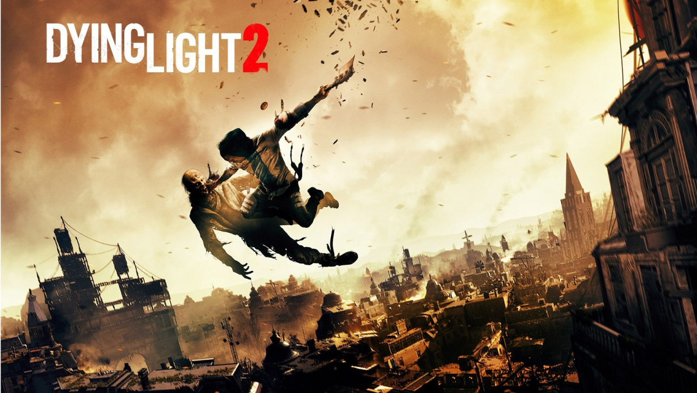

DYING LIGHT 2
About Game
You are a wanderer who can decide the fate of the City, but your exceptional abilities
have their price. You are haunted by incomprehensible and strange memories. In pursuit
of the truth, you find yourself in the very epicenter of the fighting. Hone your skills,
defeat enemies and find allies. To do this, you will need not only fists, but also
ingenuity. Find out the dark secrets of the powerful, choose a side and take fate into
your own hands. Whatever you do, don't forget one thing... One must always remain human.
Sony
29.99
CHANGE OF DAY AND NIGHT
Wait until nightfall to visit the gloomy lairs of the infected. The light of the sun
drives the creatures to their burrows, but with sunset the monsters leave their
hiding places and go hunting.
PLAY AS A CITY MERCENARY
Your actions determine the future and the appearance of the City. Take into account
the balance of forces and make decisions against the background of growing
contradictions to create your own world.
LOOK FOR AN IMPLANT THAT GIVES
Take on the most dangerous task in your life and find a prototype of an implant that
allows you to gain immortality.